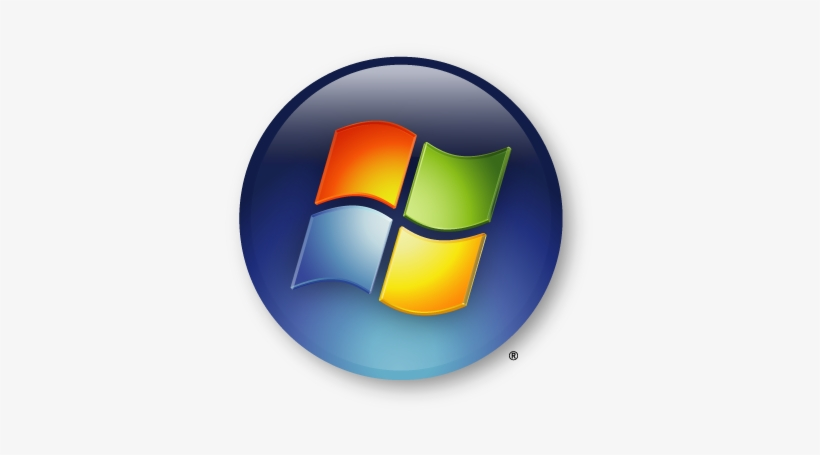
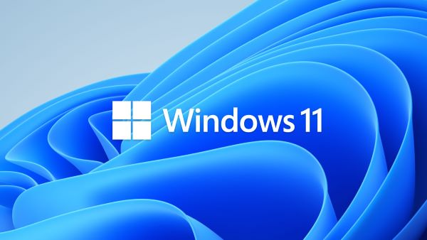
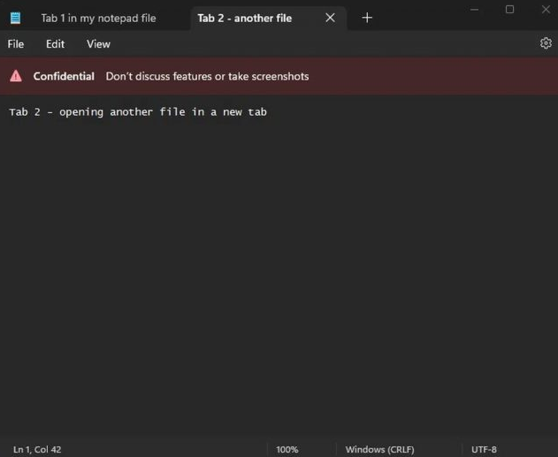

Portfolio - BTS SIO (1ere Année)
Veille Informatique :
La veille technologique consiste à s’informer en continu sur les nouveautés les plus récentes d'un sujet/secteur particulier en mettant en œuvre des techniques d’acquisition, de stockage et d’analyse d’informations à la manière d’une revue de presse.
Me concernant, le sujet de veille que j’ai choisi, c'est « Windows 11 ». C'est un sujet vaste, mais sur une technologie encore en constant développement et qui possède régulièrement des updates. Je trouve ça donc intéréssant d'en parler et d'exposer ici les dernières nouveautés.
La prise en charge de Windows 7, 8 et 8.1 s'achève : les prochaines versions d'Edge et Chrome ne supporteront plus ces OS et Microsoft recommande de passer à Windows 10 ou 11.

>>> Lire l'article
Microsoft supprime la promotion de sites Web dans la section Recommandé du menu Démarrer de Windows 11, une modification bien accueillie par les utilisateurs.

>>> Lire l'article
Windows 11 : un employé de Microsoft annonce accidentellement que le Bloc-notes va bénéficier des onglets sur l'OS, puis supprime rapidement sa publication.

>>> Lire l'article